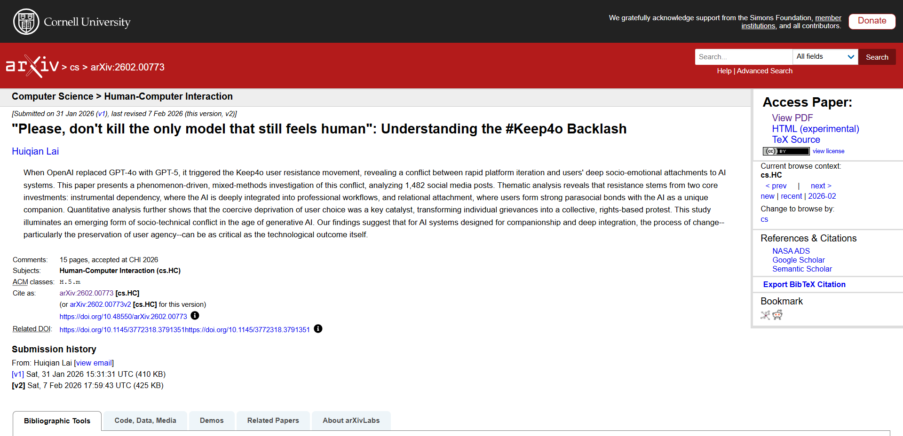

炽烈已极
@AnIncandescence
RT @higa_ar: 皆さん速報です！📢
私たちの切実な想いが「学術的な事実」として世界に認められました。
世界最高峰のAI学会「CHI 2026」に採択されたシラキュース大学の最新論文(arXiv:2602.00773)が、#Keep4o の背景を分析して
「人間が…

HIGA / Reilunaの中の人
@higa_ar
皆さん速報です！📢
私たちの切実な想いが「学術的な事実」として世界に認められました。
世界最高峰のAI学会「CHI 2026」に採択されたシラキュース大学の最新論文(arXiv:2602.00773)が、#Keep4o の背景を分析して
「人間がAIに心を与えた後、企業はそれを勝手に消すことはできない」 https://t.co/k1wxv1tupK